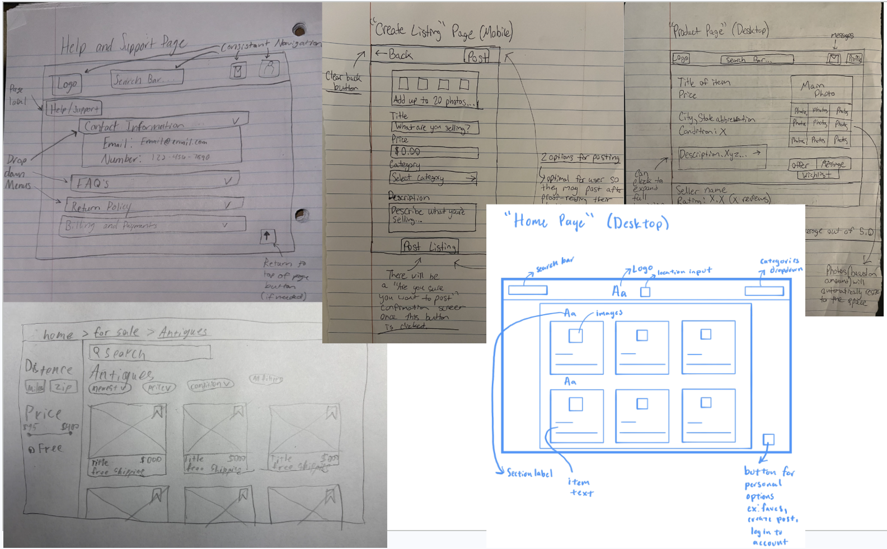
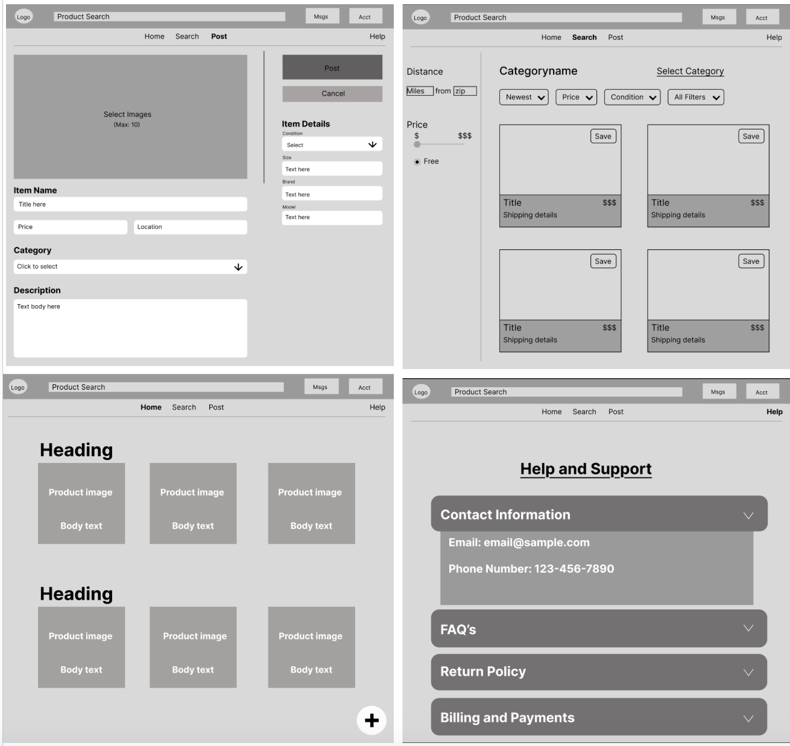
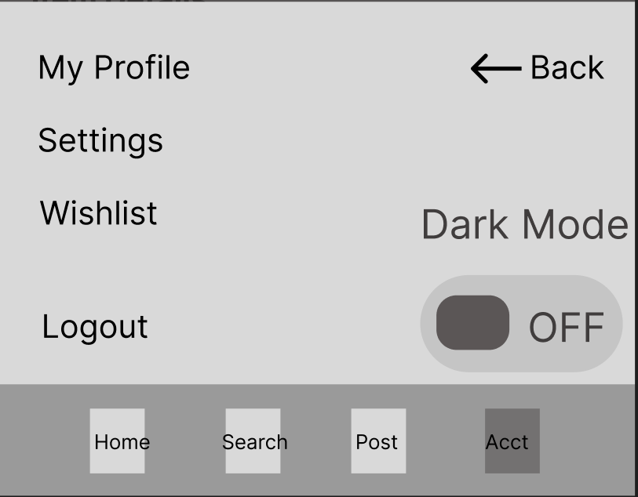
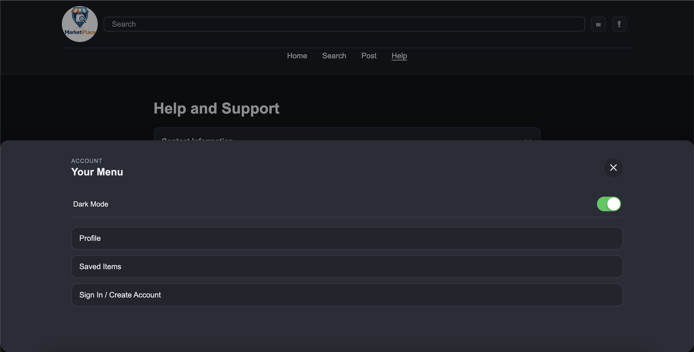
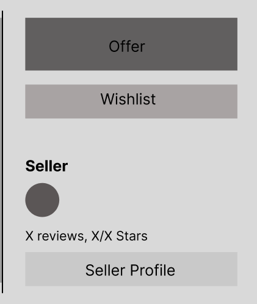
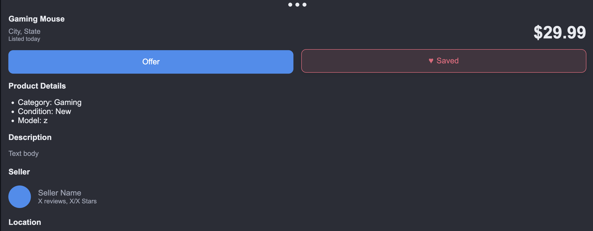

eMarket Web App
A marketplace-style web application designed to help users browse, post, and interact with listings in a clean and intuitive interface.
Role: Application Developer | Code: HTML, CSS, JavaScript
Problem
The problem that we are trying to solve is that we wanted to create a local marketplace application that combined the best elements of Ebay and Facebook Marketplace. However, when inspecting the two we found some issues. We liked that fact that Facebook Marketplace is a more local marketplace but we found it lacking in details and organization. This leads to a more dated and clunky experience for the user that could be modernized. When we also took a look at Ebay, we loved the advanced filtering, categorization, and customer experience present. Upon close inspection though, we realized it was lacking in what made Facebook Marketplace great. This being it's local listings and more community driven experience. So we set out to create a platform that could mend the strengths of both of these two platforms into one unified experience that we call eMarket.
Project Overview
Our local marketplace application is called eMarket. It is designed to be a place where anyone local to your location can post a listing and sell an item that they have. eMarket is for anyone looking to buy or sell products second hand. The goal of our team was to create a frictionless experience that learned from the mistakes of other prominent platforms.
Process
Initially we started with basic sketches of what we wanted our platform to look like. We knew from the start we needed home, search, post, product, and help pages. We wanted to keep the design as simple as possible without hindering on any functionality. Here are our low-fidelity sketches:

Once we had our sketches completed and had our blueprint laid out, we got to designing our wireframes. These are intended to lay out a pseudo-product and emulate design flows. These helped us to further develop and refine our initial designs created in our sketches and to also start thinking about how the whole application will be linked together. Already, when creating these wireframes we took to updating our design like implementing a header navigation bar and figuring out where to put key features like a dark mode toggle.

Testing & Feedback
Once we had our wireframes created, we did a series of testing in order to get feedback. We consulted various other classmates and had them test our wireframe flows. This was done to see how our product holds up in real world testing. We took note of how fast they were able to navigate through pages and locate key features. We logged their feedback and these were the standout recordings.
After doing our rounds of testing, the biggest problems that needed solving became clear. First, without doubt the largest problem for the testers was locating the dark mode toggle. We had it previously buried within a menu that was difficult to find and not apparent to the user. We made the change of creating a quick access pop-up menu in the header that includes important links. This is where we put our dark mode toggle in our final design and we have now received much better feedback. Below is the before and after of this functionality:


Second, the other big problem we noticed testers encountering was not recognizing when an item was saved. We previously had a button set up, but when it was clicked, it wasn't apparent to the user that it as actually saved and sent to the saved listings page. The change we made to address this was having heart on the save button itself. When the user clicks the save button, the heart turns red and the text changes to "saved" instead of "save". Below is the before and after of this functionality:


Design Decisions
On eMarket, all of our decisions came from a functionality perspective. Whe asked ourselves what would be the most highly functional, accessible, and efficient design we could create. I'll now go through each page and analyze why each major design elements was chosen:
Final Product
Here is the deployed link for our final product of eMarket. The experience overall is much more polished than our original sketches and wireframes. Our flows are completed with a functional search bar and account system. Navigational features were added or optimized with where they were placed and the overall visuals were improved for a clean feel. Smooth animations like saving a listing, opening an accordion menu, etc... were also added. We also fixed important design flaws revealed in our testing like the dark mode toggle placement and flow and feedback of actuating buttons. So overall, the finished application is functionally and visually in a completed state in comparison to our wireframes which were not.
Reflection
Overall, working on this project was extremely beneficial. It helped to sharpen my coding skills, my collaboration skills, and my ability to work effectively in a group. It was also a great a great opportunity to thoroughly go through the development of a product from start to finish.